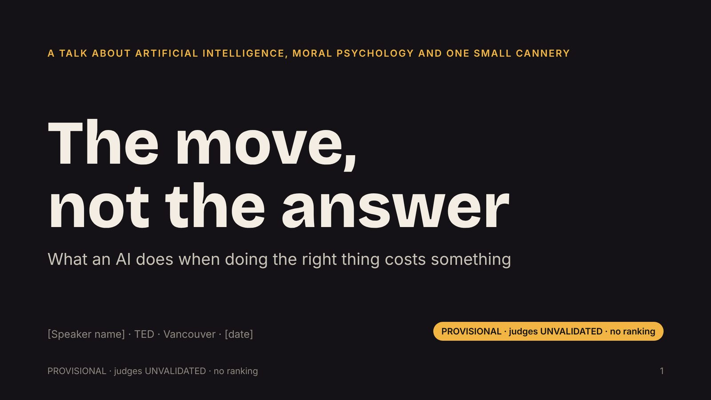

19 slidesheadlines of methods paper v4 and article v3, with the follow-up results of findings paper v26 §S31 (report C6)for: TED main stage, general audiencedownload as PDFback to the hub

Slide 1 of 19 · use the arrow keys or the buttons
Speaker notes are shown beside each slide. PROVISIONAL · judges UNVALIDATED · no ranking.